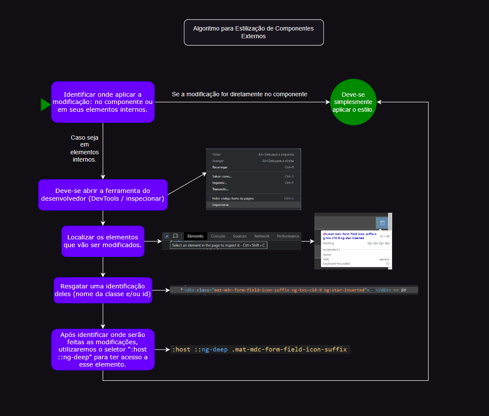

<main>
  <article>
    <h1>Estilizando componentes externos no Angular</h1>
    <section>
      <mat-panel-title>
        Ao desenvolver uma aplicação utilizando o Angular, é comum utilizar
        diversas bibliotecas de componentes para auxiliar no desenvolvimento. No
        entanto, realizar ajustes nos estilos desses componentes pode ser um
        desafio. Este guia tem como objetivo mostrar como fazer essas
        modificações de maneira direta e sistemática. Os exemplos apresentados
        neste guia utilizarão o Angular Material como biblioteca de componentes,
        porém o algoritmo é o mesmo para qualquer biblioteca.

        <div>
          <mat-icon *ngIf="!expanded" (click)="expanded = !expanded"
            >expand_more
          </mat-icon>
          <mat-icon *ngIf="expanded" (click)="expanded = !expanded"
            >expand_less
          </mat-icon>
        </div>
      </mat-panel-title>
      <p *ngIf="expanded">
        Além do Angular Material, existem outras bibliotecas populares de
        componentes que podem ser utilizadas, tais como:
        <br /><br />
        1.PrimeNG: uma coleção de componentes UI para Angular com uma variedade
        de estilos e temas personalizáveis.<br />
        2.NGX Bootstrap: uma implementação do Bootstrap para o Angular,
        oferecendo uma ampla gama de componentes e estilos prontos para uso.<br />
        3.Clarity: uma biblioteca de componentes do VMware que fornece um
        conjunto de elementos de interface de usuário limpos e responsivos.<br />
        4.Nebular: uma biblioteca de componentes do Angular baseada no Angular
        Material, com um design moderno e elegante.<br />
        5.Ant Design Angular: uma implementação do Ant Design para o Angular,
        oferecendo uma ampla gama de componentes estilizados.<br /><br />
        Ao seguir as instruções deste guia, você será capaz de estilizar os
        componentes dessas bibliotecas da mesma maneira que será demonstrada com
        o Angular Material.
      </p>
    </section>

    <h3>Passo a passo</h3>

    

    <h3>Sumario dos exemplos</h3>

    <section>
      <div>
        <button
          (click)="navigate('button')"
          mat-raised-button
          color="accent"
          class="button"
        >
          Button
        </button>
        <span>
          Exemplo mais básico, aplicando a estilização diretamente ao botão.
          Modificando a formar e adicionando uma borda.</span
        >
      </div>
      <br />
      <div>
        <button
          (click)="navigate('datepicker')"
          mat-raised-button
          color="accent"
          class="button"
        >
          Date Picker
        </button>
        <span>
          Neste exemplo, vamos identificar a classe do ícone e mostrar como
          remover ou alterar sua cor utilizando o :host ::ng-deep.</span
        >
      </div>
      <br />
      <div>
        <button
          (click)="navigate('button-toggle')"
          mat-raised-button
          color="accent"
          class="button"
        >
          Button Toggle
        </button>
        <span>
          Neste exemplo, vamos aprofundar ainda mais as modificações de um
          componente, identificando mais classes e aplicando estilos
          adicionais.</span
        >
      </div>
      <br />
      <div>
        <button
          (click)="navigate('chips')"
          mat-raised-button
          color="accent"
          class="button"
        >
          Chips
        </button>
        <span>
          Neste exemplo, além de modificar alguns estilos, vamos adicionar um
          novo elemento dentro desse componente, um ícone que não está
          disponível nativamente.</span
        >
      </div>
      <br />
    </section>
  </article>
</main>
